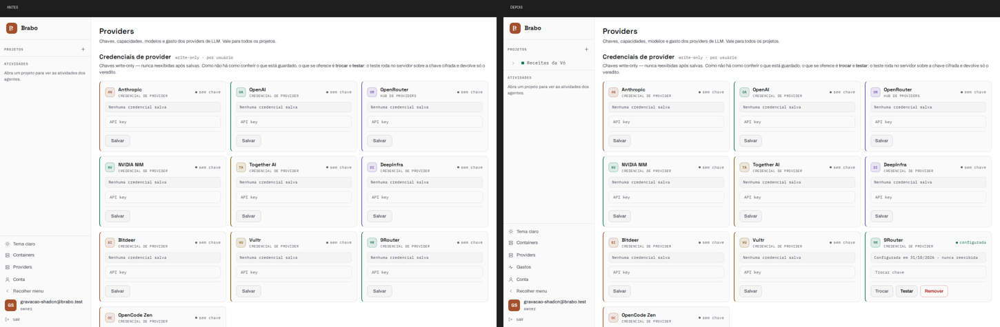
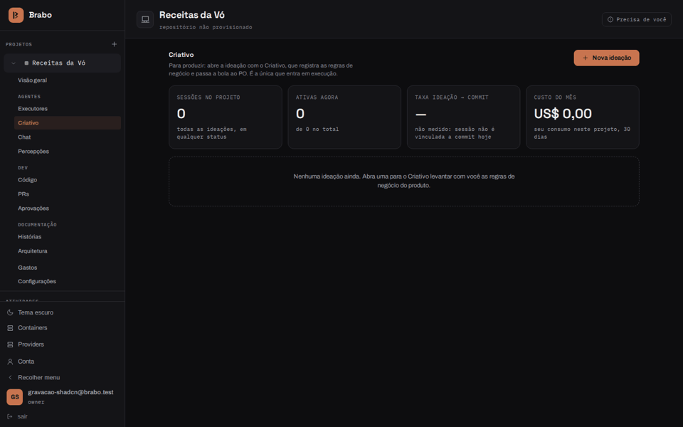

Интерфейс до и после shadcn (31.10.2026)
Запись от 31 октября 2026 г.: описывает Brabo на ту дату
Визуальная запись от 31.10.2026. Экраны ниже относятся к интерфейсу той даты и не показывают текущую версию.
Визуальная запись раунда, который сменил основу фронтенда на shadcn/ui с Base UI
(ADR 0232) и в тот же день
заставил 9Router получать инструменты агентов
(RN-950). До — это установка с dev
утра 31.10; после — dev 5851354c7c, где собственные примитивы
(Button, Badge, Card, Alert, Table, Input, Select, Modal,
Disclosure, вкладки) уже обслуживаются компонентами shadcn.
Как записывалось: браузер без интерфейса (Playwright) против локальной установки,
на новой тестовой учётной записи, экраны 1440×900 в обеих темах. Чат использует 9Router
с бесплатной моделью (ollama/gpt-oss:120b), без затрат.
Прогулка по экранам
Вход, главная, Containers, Providers, Account и Status — сначала в тёмной теме, затем в светлой. Цель миграции — чтобы ни один экран не менялся; между двумя записями меняются данные (тестовый проект, созданный между записями) и новая страница Gastos.
| До | После |
|---|---|
 |
 |


Сессия Criativo
Один и тот же разговор в обеих установках: Criativo открывает сессию, получает идею («приложение для хранения рецептов моей бабушки»), затем аудиторию и требования.
- До: 9Router не получал инструменты, и модель писала их как
текст (блок
declare_open_questionв YAML в ленте). Ни одно бизнес-правило не было записано: боковая панель остаётся на нуле. - После: Criativo вызывает инструменты по-настоящему. Вопрос становится структурированной формой, а панель показывает записанные бизнес-правила.
| До | После |
|---|---|
 |
 |

Новая страница Gastos
Глобальной страницы /spend (RN-952) в версии «до»
не существовало. В записи «после» она появляется без полей страницы — содержимое
прижато к боковой панели; дефект зафиксирован для исправления.